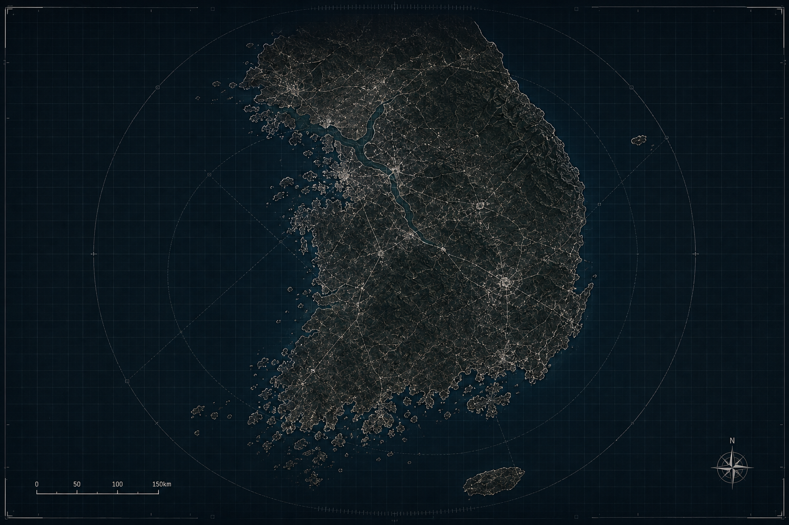
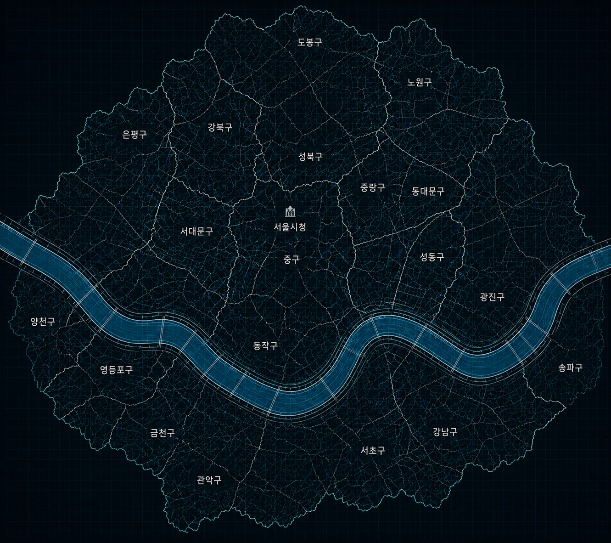
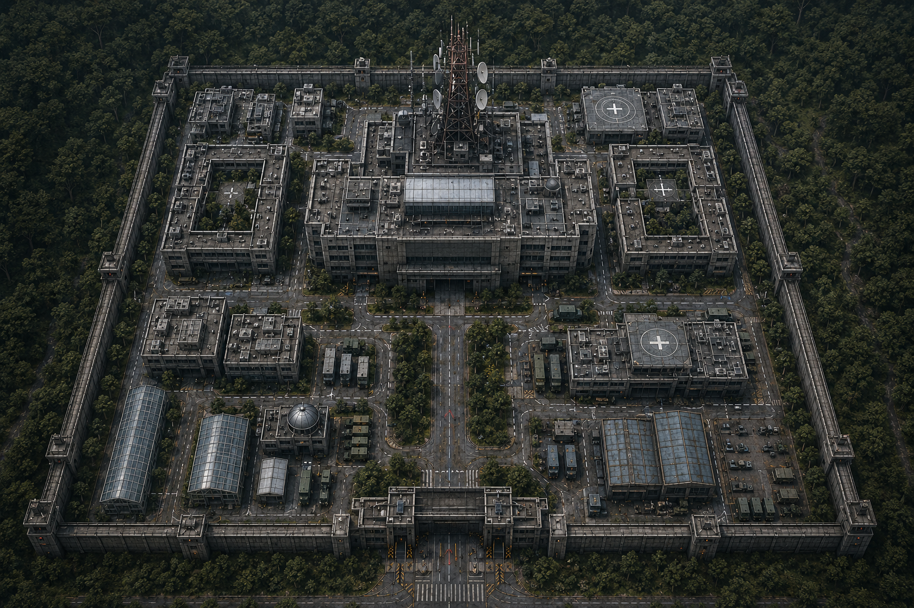

SIGNAL ACTIVE
01
// 주성호
JOO SUNG HO
REGISTERED SURVIVOR // NETWORK LINK ACTIVE
86%SIGNAL
ACTIVESTATUS
01SECTOR
⟶ ACCESS SURVIVOR PROFILE
서울 전역 생존자 네트워크가 활성화되어 있습니다. 전술 지도에서 시작 지역과 생존자 신호, 위협 지역, 미확인 신호를 확인할 수 있습니다.

전국 ARES NETWORK 전술 연결망
서울 ARES-01 거점으로 진입할 수 있습니다.

SEOUL METROPOLITAN AREA / LIVE NETWORK

시설 이미지는 그대로 두고
구역 선택 UI만 코드 레이어로 표시합니다.
ARES NETWORK가 수집한 생존자 식별 데이터입니다. 프로필 이미지는 이후 실제 캐릭터 이미지로 교체할 수 있습니다.
전 지역 생존자 거점의 통신 상태를 확인하고 있습니다. UNKNOWN 개체의 이동 신호가 다수의 위험 구역에서 감지되었습니다. 현재 활성화된 생존자 통신 신호는 ARES NETWORK를 통해 지속적으로 추적되고 있습니다. 모든 등록 생존자는 손목 장치의 연결 상태를 유지하십시오. 긴급 구조 신호는 가장 가까운 연결 거점으로 자동 전달됩니다.
| TIME | TRANSMISSION | PRIORITY | STATUS |
|---|---|---|---|
| LIVE | EMERGENCY BROADCAST | CRITICAL | ● LIVE |
| 02:58:40 | ARES-01 DISTRESS CALL | HIGH | RECOVERED |
| 02:31:04 | SIGNAL INTERRUPTION | HIGH | ARCHIVED |
| 01:17:22 | CIVILIAN EVACUATION ORDER | HIGH | ARCHIVED |
| 00:43:51 | UNKNOWN NEUROLOGICAL INCIDENT | UNKNOWN | CLASSIFIED |
| 00:04:37 | INITIAL FACILITY ALERT | CRITICAL | RESTRICTED |
생존자 신호가 마지막으로 중첩된 좌표를 분석합니다. 지도와 연결해 특정 장소를 세계관의 주요 거점으로 사용할 수 있습니다.
● LOCATION TRACE AVAILABLE접근 권한이 없는 사건 기록. 이후 세계관 떡밥, 비밀 사건, 단서 파일을 넣을 수 있는 잠금형 아카이브입니다.
△ PARTIAL DATA발견한 사진, 음성 메시지, 메모, 실종 기록 등을 실제로 차곡차곡 쌓아가는 수집형 세계관 메뉴입니다.
□ EMPTY SLOT사운드, 스캔라인, 애니메이션 강도, 시스템 테마 등을 나중에 연결할 수 있습니다.